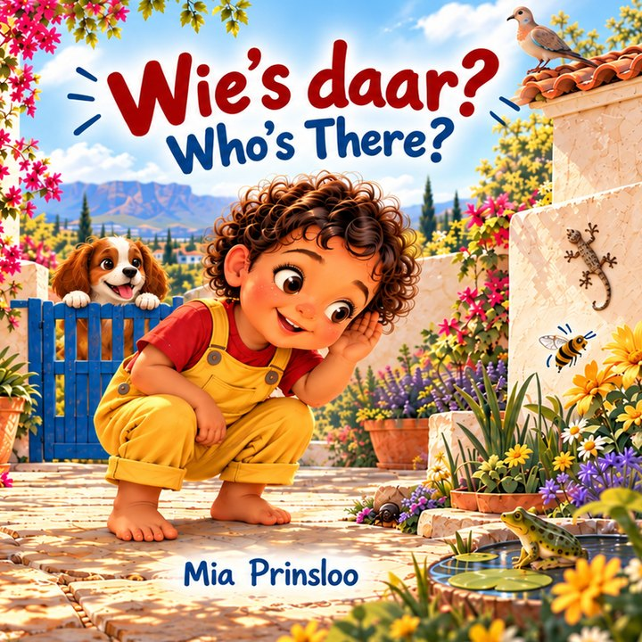
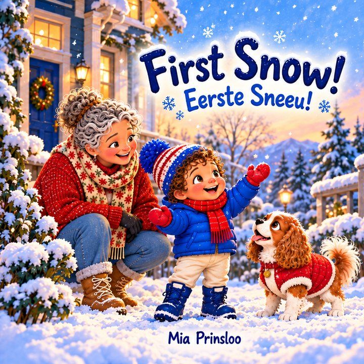
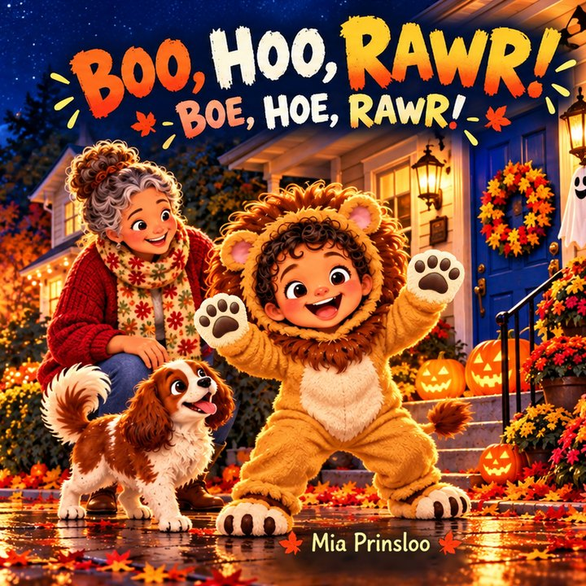
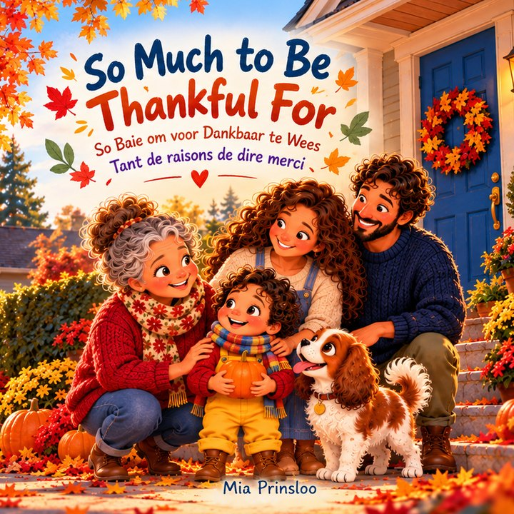
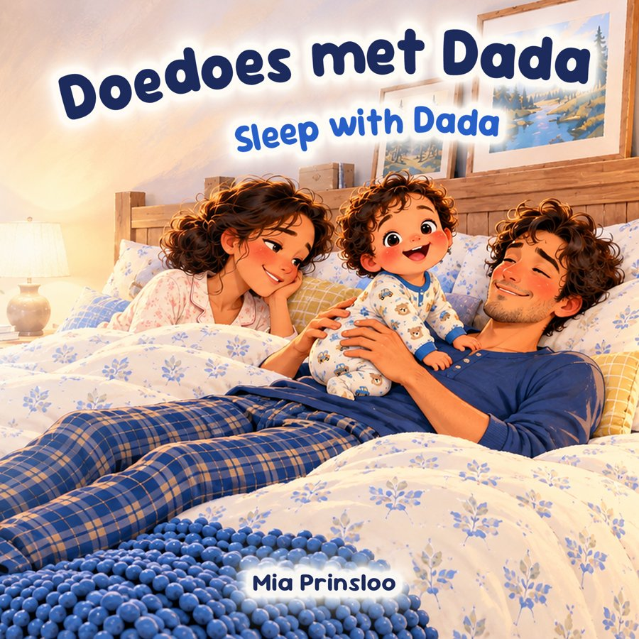

The books
In the order they were published
-

Animal soundsWie's daar? / Who's There?
Afrikaans first, with English underneath
A tiny beetle, a gecko on the wall, a frog by the pond and a very noisy hadeda: Milo discovers the sounds of a sunny Cape Town garden.
Find it on Amazon -

WinterFirst Snow!
Eerste Sneeu!
Milo wakes up to a white world. Boots on, coat on, mittens on, and out with Ouma and Dog into snow that is cold, soft and crunchy.
Find it on Amazon -
Christmas
Snowy Christmas, Sunny Christmas
Kersfees in die sneeu, Kersfees in die son
Milo has Christmas in the snow while Ouma and the family celebrate in the summer sun. Different on the outside, the same inside: for every family with someone they love far away.
Find it on Amazon -

HalloweenBoo, Hoo, Rawr!
Boe, Hoe, Rawr!
Milo the little lion follows every strange sound down a glowing Halloween street, just brave enough to find out each time. Gently spooky, never scary, with a cosy bedtime ending.
Find it on Amazon -

ThanksgivingSo Much to Be Thankful For
So Baie om voor Dankbaar te Wees · Tant de raisons de dire merci
Crunchy leaves, a round pumpkin, Dog's wagging tail and a big hug from Ouma: a cosy first story about gratitude.
Find it on Amazon -

BedtimeDoedoes met Dada / Sleep with Dada
Afrikaans first, with English underneath
Mama is exhausted, so tonight it's Dada's turn. In the bed, on the couch and on the rug, Dada tries everything, but baby Milo is having far too much fun to sleep. A funny bedtime story for every parent who has tried absolutely everything.
Find it on Amazon -
Space
What's Up There? / Wat is daar bo?
English first, with Afrikaans underneath
With some cardboard, a roll of tape and a whole lot of imagination, Milo and Dog blast off past the Moon, the Sun, the planets and the stars. Ends with a solar system chart to explore together.
Find it on Amazon
All the books are paperbacks. Each link opens Books2Read, which takes you to your own country's Amazon. It may say "Ebook" and show a Kindle button: tap it and it opens the paperback.
About the books
I began writing Milo's Adventures for my own toddler, so they'd grow up with the stories, sounds and words of two homes: one in the snowy north and one in the sunny south. More books are on the way.
Mia Prinsloo